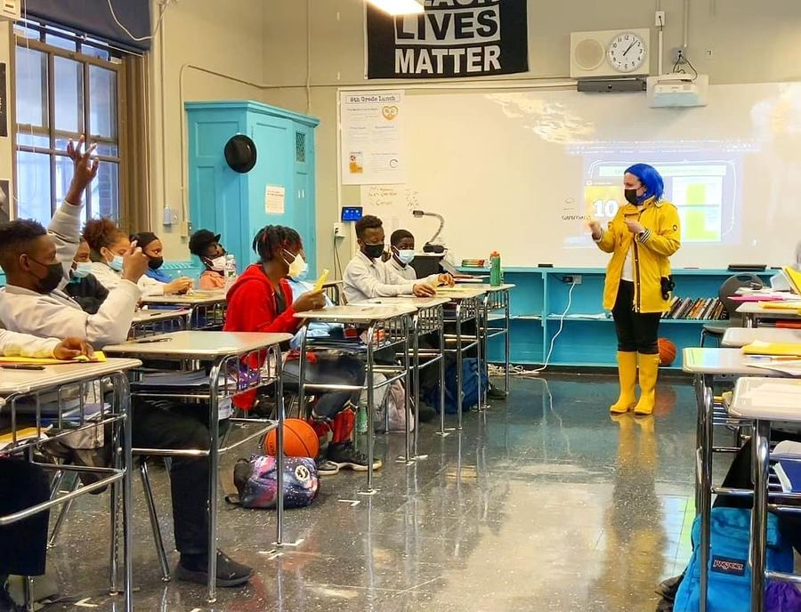
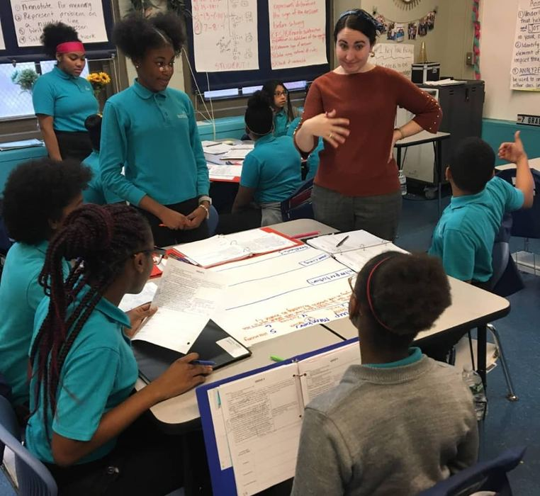
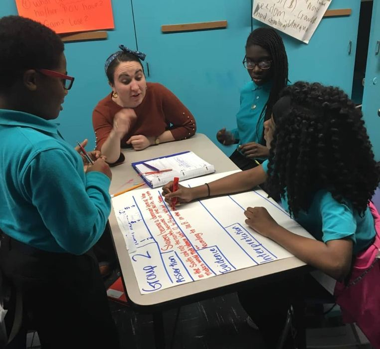
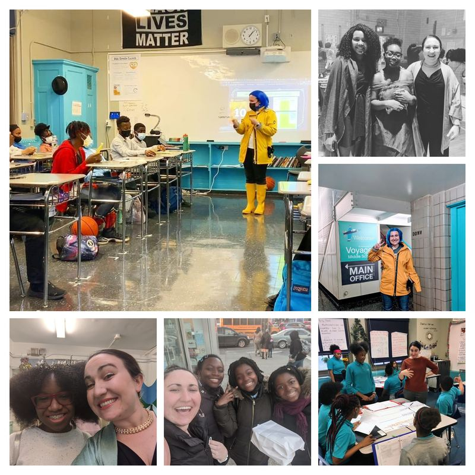

Twelve Years in the Classroom
History is something students do
I started teaching history in Brooklyn in 2015 and haven't stopped. What keeps me here — across schools, grade levels, and roles — is the moment when a student realizes that the past is contested, that the record is incomplete, and that they have something to say about it.
These photos are from a decade of that work. Small-group analysis. Whole-class discussion. Documents spread across tables. Students writing, arguing, reconstructing, questioning. That's what this game is trying to recreate and extend.




What Drives This Work
The question I couldn't stop asking
Archives are made, not found. Someone selected every document in a collection, decided it mattered, preserved it — and thousands of other records didn't make that cut. What happens when students take that seriously?
Marie Connor, on the provocation behind the projectI taught AP United States History in the Bronx for three years. My students were brilliant, curious, and almost entirely absent from the standard archival record. The sources they analyzed in class had been selected by institutions that hadn't thought much about them.
That mattered to me. It still does. Critical archival theory gave me a framework for why — and this game is my attempt to put that framework in the hands of students directly.
My doctoral work at Teachers College examines how archival theory can reshape the historical thinking we ask of students. Escape the Archive is the classroom version of that argument: an attempt to make the politics of the record legible, urgent, and workable for young people.
The Journey
How I got here
2013 — University of Virginia
B.A. Foreign Affairs & East Asian History
Lawn Resident; Virginia Legend Award. Grew up in a military family in Yokosuka, Japan — graduated high school valedictorian in three years. History felt like the one subject that could hold the complexity of the world I'd grown up in.
2015–2022 — Achievement First, Brooklyn
Lead Teacher → Dean of History → Curriculum Lead
Seven years building rigorous, equity-focused history instruction. Authored the 8th-grade American history curriculum for the tri-state network. Stage Four Distinguished Teacher Award (Achievement First's highest recognition). Diversity and Inclusion Co-Chair.
2022–2025 — DREAM Charter School Network, Bronx
APUSH Teacher, Department Chair & Founder of the SS&R Program
Raised the AP US History pass rate from 3% to 59% in two years. Built the school's first debate program — which qualified for New York State competition in its inaugural year. Built a vertically aligned 6–12 Social Sciences and Research program from the ground up, including an AI literacy curriculum developed with aiEDU.
2025–Present — Teachers College, Columbia University
Doctoral Candidate, Curriculum and Teaching
Examining how critical archival theory reshapes historical thinking in K–12 classrooms. Teaching Assistant in the Curriculum and Teaching program. Provost's Grant recipient, 2025–2026. Associate Director for Social Studies and Research at a Bronx school network, designing curriculum and professional learning for middle and high schools.
2026 — Student and Community Voice AI Summit
AI K–12 Student Agency Award
"Understand, Use, and Build: A Framework for Teaching AI Readiness to Disrupt Generational Poverty." Presented nationally. Featured practitioner case study in The AI Education Project's aiEDU Partnership Profile.
Why Try This?
Why you should trust this project
This isn't a game made by someone who thinks classroom learning can be gamified from the outside. It was built by a teacher who has spent twelve years in Bronx and Brooklyn classrooms, trying to understand what it takes for rigorous inquiry to actually land with students.
Built from the classroom out
Every mechanic in this game was designed around what I've seen students do when they engage seriously with historical evidence — and what gets in the way.
Grounded in scholarship
The theoretical framework draws on critical archival theory, historical thinking research, and doctoral-level study in curriculum at Teachers College, Columbia University.
Tested with real students
This experience has been developed and refined with students in the Bronx — real young people with real analytical capacity and real stakes in the questions the game raises.
Committed to student agency
The entire design is organized around giving students genuine intellectual responsibility — not simulating it, not scaffolding it down to nothing, but actually trusting them with hard problems.
Get in Touch
Contact Marie
Questions about the project, requests to use it in your classroom, research inquiries, collaboration ideas, or feedback — reach out. I'm also happy to talk archival pedagogy, historical thinking curriculum, or AI literacy for K–12.
Your email will only be used to respond to your message.